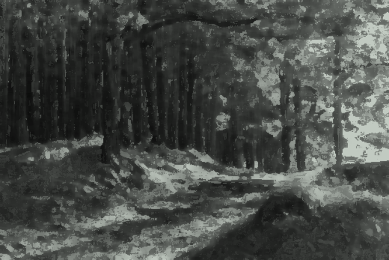
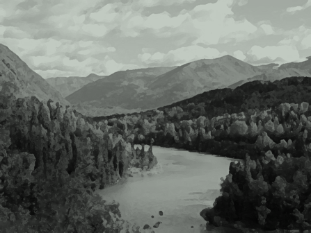
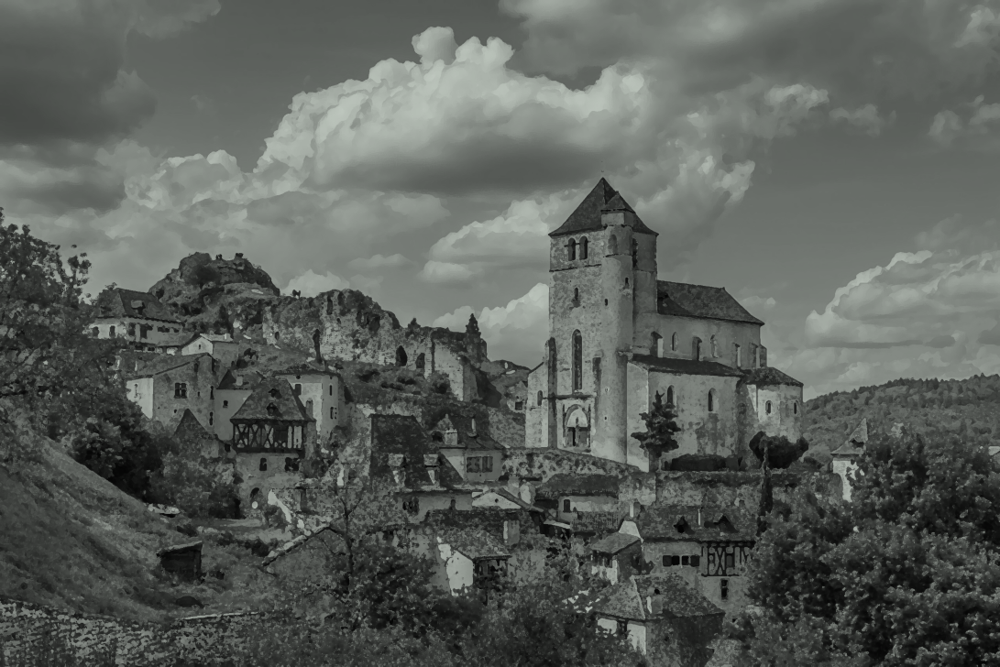

Welcome to The Highlands
of Asghbgahn.
Forest. Hills. Skies. Is that unexpected?
The Path
It is still a path. An ordinary dirt path through the forest, ever leading you north over these lands. There is not much to see here.
Onwards.
The Woods.
The Highlands are covered in these coniferous forests. The trees are all very young, though, none are older than 100 years or so.
Onwards.
The River
The Little River originates deep within the northern Mountains. At the foot of the mountains, just north of The Capital, it flows into The Lake. From there, The River, the main outflow, continues north, down into The Hills, then to The Plains, where it curves and loops as it wishes on the flat terrain. Eventually, it divides into The Delta and drains into the northern Sea.
Onwards.
The City.
The City is built right next to The River, in the heart of The Highlands. It has a population of 5,000 5001.5 and is the largest settlement in all of Asghbgahn.
The Market.
The market is full of activity, as you would expect a market to be, especially in The City.
The People.
The people bustle about their daily lives, generally seeming more occupied than the villagers.